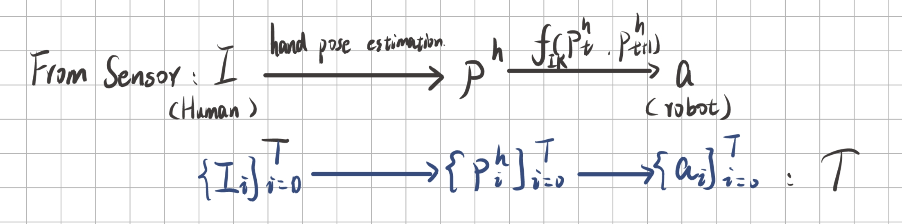

Project Proposal for Ca3OH1
Project proposal for Contact Aware in 3D Object-Human Interaction.


Openpi in Robocasa
Ported OpenPI to Robocasa and validated its performance in simulation.

HAJL Reading Note
Note when reading paper: Human-Agent Joint Learning for Efficient Robot Manipulation Skill Acquisition.

Survive in Linux
A quick glance of base tools used when coding in Linux.
Jupyter Environment
A guidance to run Jupyter on Miniconda wrote when I was a TA in class CS1950.